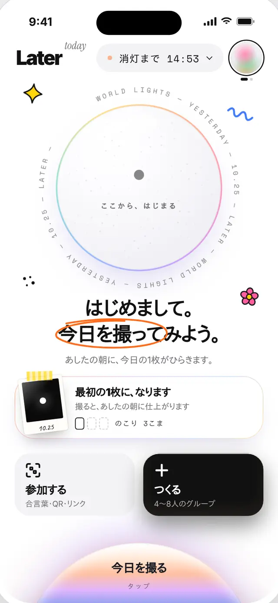
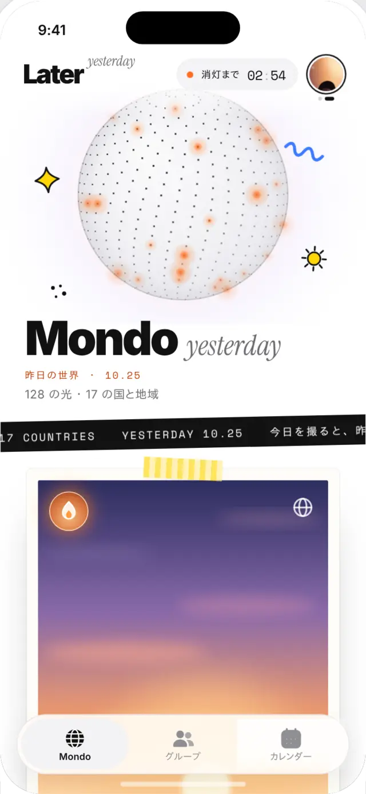
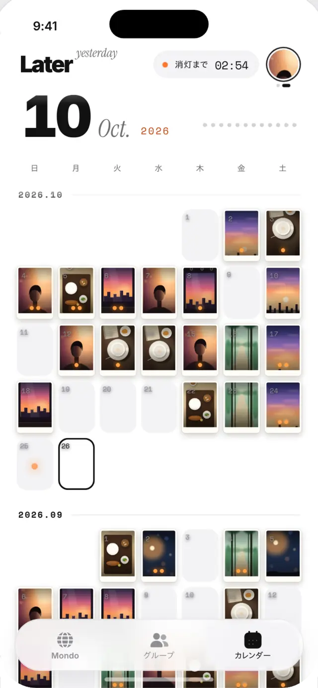
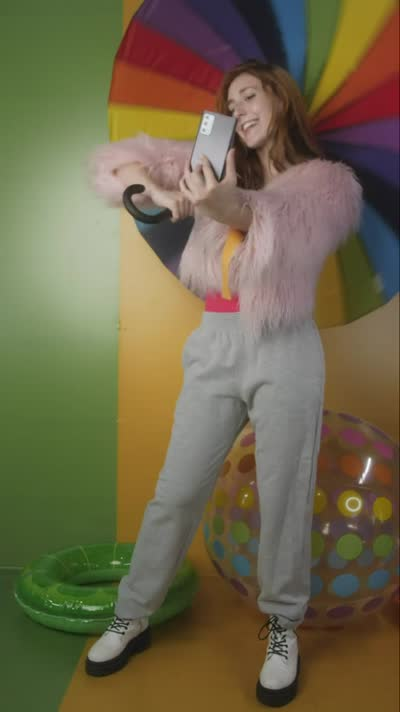

初日
はじめまして。
今日を撮ってみよう。
最初の1枚になります。撮ると、あしたの朝に仕上がる。まだ昨日がない日は、ここから、はじまる。

1日3こまの、あしたに届くカメラ
撮れるのは1日3こまだけ。撮った1枚は、ひと晩かけて現像されてあしたの朝9:00に仕上がる。友だちの昨日は、今日を撮った人にだけひらく。
アプリの中
初日
最初の1枚になります。撮ると、あしたの朝に仕上がる。まだ昨日がない日は、ここから、はじまる。

毎朝 9:00
昨日の1枚は、現像ずみ。あたらしい3こまが届く。世界の光(128)は、月を押すたびにゆらぐ。

撮る
月をタップしてタグを選び、1.5秒の長押し。うっかり撮らない。画面にはその場で写真は出ない。

夜
撮った1枚はひと晩かけて現像される。消灯までのカウントダウンが、今日の終わりを教えてくれる。

Mondo
名前も、フォローも、いいねもない。匿名の名前と丸いアイコン、国と地域だけ。

グループ
4〜8人のちいさなグループ。1枚撮ると、みんなの写真が届く。合言葉・QR・リンクですぐ入れる。

カレンダー
1日1枚ずつ、チェキみたいに並ぶ。撮らなかった日も、責めません。

今日のフィルム
写ルンですみたいに、フィルムは数えるほどしかない。だから「なんとなく」じゃなくて、今日いちばん残したいものを撮る。
撮る前に、えらぶ。3つまで。
撮った写真は、その場では見られません。あしたの朝、仕上がるまでのおたのしみ。
ひと晩の現像
預けた1枚は、チェキみたいに乳白色のもやから、色がすこしずつ濃くなっていく。夜のあいだ、中身はまだ見えない。
押し続けると、写真の鼓動が伝わる。
ひらくまで02:54

長押しで、鼓動を感じる
月を長押し
グループのみんなの昨日は、自分の今日を撮った人にだけひらく。撮ったら、月を長押し。縁をなぞるように光がたまって、昨日がひらく。
長押し ・ 昨日の光が、まだ閉じています
きょうの、みんな
撮るたびに、入っているグループ全部にすぐ届く。みんなの1枚が、チェキみたいに壁にならぶ。
昨日の世界 ・ 10.27
128 の光 ・ 17 の国と地域
Mondo はイタリア語で「世界」。世界じゅうの、ひとり1枚の昨日が集まる場所。数字を気にしなくていいから、ちょっとラク。
昨日、多かったことば
触覚
Later は、ひとつひとつの操作に手ざわりがある。押してみて。Android のブラウザなら、ほんとうに震えます。
iPhone のブラウザは振動に対応していないので、画面の下に「いまの触覚」が文字で出ます。アプリでは、ほんものの触覚で届きます。
動画素材: Mixkit(Stock Video Free License)。画面は開発中のアプリのものです。